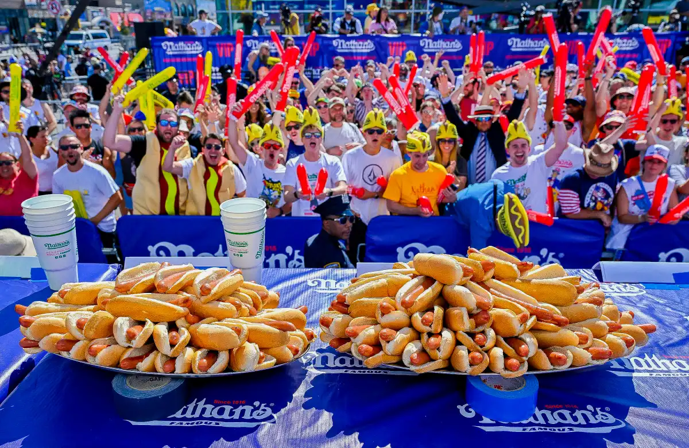

[1] "::::{.cr-section}\n...\n::::"Intro to Closeread Scrollytelling: Nathan’s Hotdog Eating Contest
tidyverse
closeread
data visualization
scrollytelling
A data visualization module using Nathan’s Hot Dog Eating Contest data through a closeread story.
Module
Please note that these materials have not yet completed the required pedagogical and industry peer-reviews to become a published module on the SCORE Network. However, instructors are still welcome to use these materials if they are so inclined.

Introduction
The Nathan’s Famous Hot Dog Eating Contest has been held annually since 1972. Over time, changes in contest duration, training methods, and competitive intensity have shaped modern performance levels.
In this module, students explore contest data through a closeread scrollytelling format in Quarto. The goal is not only to analyze performance trends, but to understand how data visualization can be structured into a guided narrative.
Rather than simply producing graphs, students will learn how to structure visualizations into a guided analytical narrative.
Background: Closeread
Closeread is a Quarto extension that enables scrollytelling for HTML documents.
Scrollytelling is a style of web-based storytelling in which:
Text and graphics transition as the reader scrolls
Visual elements become “sticky” and remain fixed while the narrative changes
Attention is directed intentionally toward specific analytical moments
Closeread allows these techniques to be implemented directly within Quarto using structured sections and plot references.
Closeread Structure
Closeread documents are built using three key components:
- Sections
Sections define areas where scrollytelling behavior occurs
Everything inside a .cr-section behaves as part of the scroll-driven story.
- Stickies (Plots or Elements to Highlight)
A sticky element is defined with a unique ID:
[1] ":::{#cr-plotname}\n<plot code>\n:::"This element becomes pinned (or “sticky”) when triggered.
- Referencing a Sticky
Inside the narrative text, reference the sticky using:
When that line scrolls into view, the corresponding sticky element becomes the focus.
Data
This module uses a cleaned dataset of winners from the Nathan’s Famous Hot Dog Eating Contest from 1972 to 2025.
Download data: hotdog_clean.csv
Variable Descriptions
| Variable | Description |
|---|---|
| Year | Year the competition took place |
| Sex | Sex of the winner for the year the competition took place |
| Dogs | Total hot dogs eaten |
| Winner | Name of the winner for their sex category |
| Time | Time in minutes the competition elapsed |
| DPM | Dogs eaten per minute |
Closeread essentials
Closeread adds one key idea to a normal Quarto document:
A plot becomes a target when it has an ID like {#cr-plotname}
Your narrative becomes a trigger when it references the target using
When the reader scrolls to that trigger, the plot becomes the focus
You will see the same dataset multiple times. This is intentional, scrollytelling uses one anchor visualization and changes it slightly as the story advances.
Exercises
Students will:
- Construct a baseline plot of total hot dogs eaten over time.
- Identify a structural shift in the early 2000s.
- Standardize performance using hot dogs per minute.
- Use closeread references to structure a scroll-based narrative.
- Highlight Joey Chestnut’s winning years within the larger historical trend.
Conclusion
Congratulations! You just finished your first data scrollytelling project!
Closeread has many different ways it can be used to show data. Hopefully this helped understand its overall introduction through a fun scrollytelling format.
References
Bray, A., & Goldie, J. (2024). Closeread. https://closeread.dev